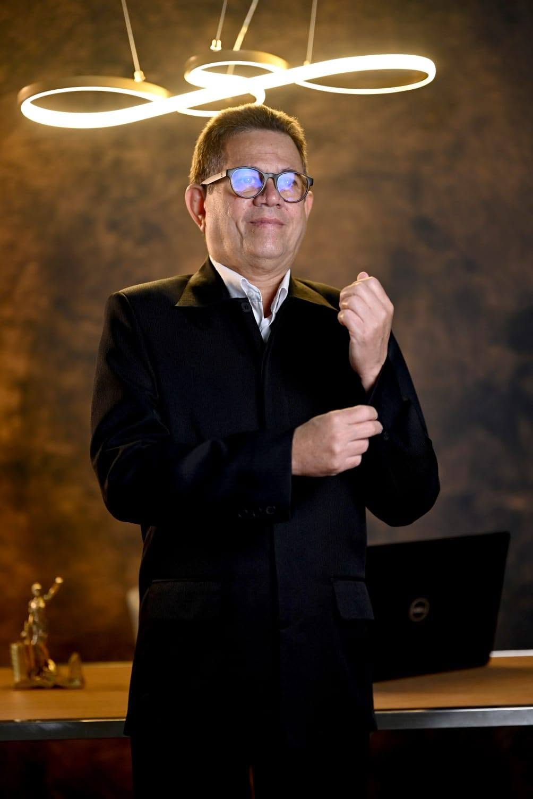

VINTE E QUATRO
ANOS NA MESMA
CAUSA.
Do Instituto Municipal de Controle Ambiental em 2002 à executiva nacional do Partido Verde. Uma trajetória que se pode conferir documento por documento.
O PARTIDO VERDE
NÃO É LEGENDA
DE ALUGUEL.
Washington Rio Branco é fundador e dirigente da executiva nacional do PV. Foi presidente do diretório estadual no Maranhão e é, hoje, um dos quadros mais antigos do partido no estado.
PARTIDO VERDE
Partido de origem ambientalista, fundado em 1986 por sanitaristas, cientistas e militantes da causa ecológica. No Maranhão, chegou a eleger 21 prefeitos sob a presidência dele.
INTEGRA A FEDERAÇÃO BRASIL DA ESPERANÇA — FE BRASILTRÊS PARTIDOS.
UMA BANCADA.
Desde 2022, PV, PT e PCdoB atuam juntos como uma única legenda no Congresso. Não é coligação de eleição: é união obrigatória por quatro anos, com programa e bancada comuns.
Todos os votos dos três partidos somam para a mesma bancada no cálculo das vagas.
Bancada maior garante espaço nas comissões que decidem pauta ambiental.
Na urna, digite 4343 para votar em Washington Rio Branco para deputado federal.
QUEM ENTREGA
BANCADA SABE
FAZER POLÍTICA.
Resultados do PV-MA sob a presidência de Washington Rio Branco. Números informados pelo próprio candidato.
CADA CARGO DEIXOU
UM DOCUMENTO.
Presidiu o Instituto Municipal de Controle Ambiental de São Luís-MA, no último mandato do prefeito Jackson Lago. Primeiro cargo de gestão ambiental.
Disputou a Prefeitura de São Luís-MA na chapa do ex-governador e senador João Castelo Ribeiro Gonçalves.
Titular da SEMA no governo Roseana Sarney. Respondeu pelo licenciamento ambiental das obras estruturantes do estado, em doze empreendimentos, do litoral ao sul maranhense.
VER AS 12 LICENÇAS →Tese defendida na UNESP: Política e gestão ambiental em áreas protegidas em São Luís-MA: o parque ecológico da Lagoa da Jansen. Disponível em acesso aberto.
LER A TESE NO REPOSITÓRIO →Protocolou representações na Procuradoria-Geral de Justiça e na Procuradoria Regional da República exigindo a recuperação da área desmatada em Bacabeira-MA após o abandono da Refinaria Premium, obra que ele mesmo havia licenciado.

PROFESSOR,
BACHAREL EM:
GEOGRAFIA
E DIREITO.
Maranhense, ambientalista, geógrafo e bacharel em Direito. Professor da UFMA, UEMA e CEUMA.
- ESPECIALISTA
- Direito Ambiental e Direito Eleitoral
- MESTRE
- Políticas Públicas
- DOUTOR
- Geografia (UNESP)
- PÓS-DOUTOR
- Geografia; Ciência Política e Administração Pública
- EM CURSO
- Pós-doutorado em Direito Constitucional brasileiro